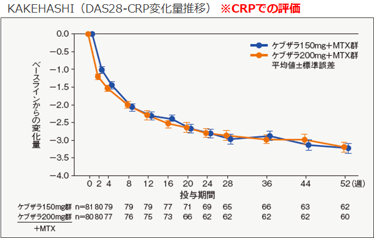

4. KEVはACTよりもIL-6受容体への親和性が高いので効果発現が早い？

KEVはACTよりもIl-6受容体への親和性が高いので効果発現が早いです。関節の痛みや腫れに悩む患者さんには即効性も大事ですね。国内のKAKEHASHI試験や海外のMOBIRITY、TARGET試験では投与2週目から効果が認められています。
＜KEVとACTの承認審査資料のKd値＞
（Kd：解離定数のこと、低いほど親和性が高い）
KEV：54pmol/L
ACT：750pmol/L
KEVの方がACTよりもKd値が低くIL-6Rへの親和性が高いため、即効性がある

KEV製品情報概要